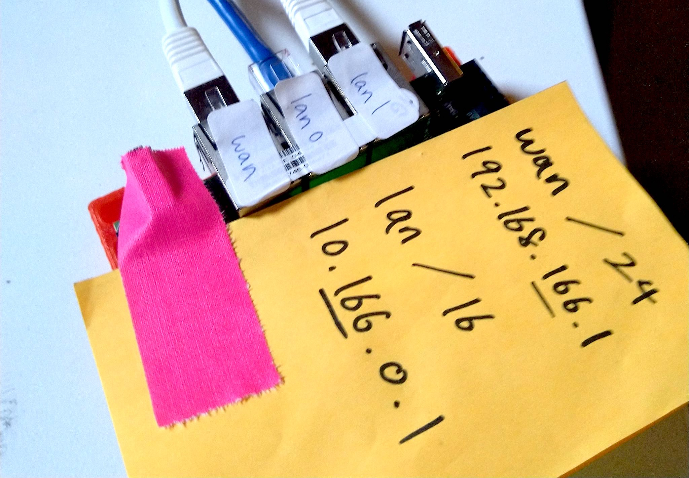

2.1 ESPRESSObin Router
The router is responsible for three things:
- Distribute IP addresses to wired and wireless client devices on the LAN
- Distribute routes to its LAN across the mesh network using Babel
- Route IP packets across the mesh network using Babel
It is the central point of each node where all other devices are connected to.

ESPRESSObin SBUD102 V5
We will configure the ESPRESSObin board so wan is used to connect point-to-point mesh radios, and lan0 and lan1 are bridged as lan for the local wired and wireless network:
+-ESPRESSOBIN---------+P+-+
| O |
| W |
| E |
| L L W R |
| A A A |
| +-N-+ +-N-+ +-N-+ |
+----| 1 |-| 0 |-| |----+
+---+ +---+ +---+
-
Using your computer, connect via serial interface to the ESPRESSObin’s micro-USB port and run something like
minicomon your computer to update the boot script (you probably need to paste a few lines at a time and make sure there are no spaces before and after each line):env default -a setenv fdt_addr 0x6000000 setenv kernel_addr 0x7000000 setenv loadaddr 0x8000000 setenv initrd_size 0x2000000 setenv initrd_addr 0x1100000 setenv scriptaddr 0x6d00000 setenv initrd_image uInitrd setenv boot_targets 'usb sata mmc1 mmc0' setenv boot_prefixes '/ /boot/' setenv bootcmd_mmc0 'setenv devnum 0; setenv boot_interface mmc; run scan_dev_for_boot;' setenv bootcmd_mmc1 'setenv devnum 1; setenv boot_interface mmc; run scan_dev_for_boot;' setenv bootcmd_sata 'setenv devnum 0; scsi scan; scsi dev 0; setenv boot_interface scsi; run scan_dev_for_boot;' setenv bootcmd_usb 'setenv devnum 0; usb start;setenv boot_interface usb; run scan_dev_for_boot;' setenv bootcmd 'for target in ${boot_targets}; do run bootcmd_${target}; done' setenv scan_dev_for_boot 'for prefix in ${boot_prefixes}; do echo ${prefix};run boot_a_script; done' setenv boot_a_script 'ext4load ${boot_interface} ${devnum}:1 ${scriptaddr} ${prefix}boot.scr;source ${scriptaddr};' saveenvthen power off the board by disconnecting both the power and the mirco-USB port
-
Using your computer, flash SD card with Armbian for ESPRESSObin, then insert it into the ESPRESSObin with Internet access through one of its ethernet ports, then power on (never connect two ESPRESSObin devices to the same network until after you run this install script, the ethernet interface on all devices have the same MAC address and it will packet storm your network, nobody wants that)
-
Login as
root/1234then run espressobin/install and go through the first-run menus. -
Figure out what type of node this will be:
Type Description edgeNode with only one Point-to-point Mesh Radio relayNode with multiple Point-to-point Mesh Radios and relays traffic for other nodes gatewayNode that routes the local network to the Internet then run with a
TYPEfrom above and aNODE_IDbetween 0 to 99:# wget https://raw.githubusercontent.com/dweb-camp-2019/meshnet/master/prodnet/espressobin/install # chmod +x install # ./install TYPE NODE_ID
The ESPRESSObin V5 has been discontinued and became unavailable weeks before DWeb Camp 2019. The ESPRESSObin V7 can be used in place of the V5.